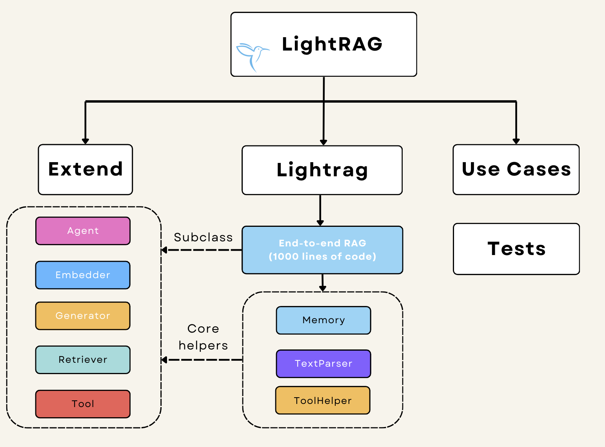

LightRAG documentation
{kind=link}
LightRAG: 1000 lines of code are all you need. No lock-in to vendors and frameworks, only the best practices of productionable RAG and Agent.
What is LightRAG?
LightRAG comes from the best of the AI research and engineering. Fundamentally, we ask ourselves: what kind of system that combines the best of research(such as LLM), engineering (such as ‘jinja’) to build the best applications? We are not a framework. We do not want you to directly install the package. We want you to carefully decide to take modules and structures from here to build your own library and applications. This is a cookbook organized uniquely for easy understanding: you can read the 1000 lines of code to see a typical RAG end-to-end without jumping between files and going through multi-level class inheritance. If we build our system expanding from light_rag.py, we as a community will share the same RAG languages, and share other building blocks and use cases easily without depending on a complex framework.
Structure
{kind=link}
Get Started
Tutorials
Docs
Resources